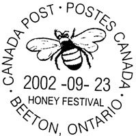

Beeton PO pictorial cancel
Honey Festival · 2002
- Status
- Expired
- Run dates
- 2002-01-01 to ?
- Design
- "HONEY FESTIVAL"; bee
- Ink colour
- Black
- Designer
- Unknown
- Post office
- Beeton PO
60 Main St W
Beeton, ON
L0G 1A0 - Subjects
- bee, animal, insect, festivity
This cancel is retired, so the post office can no longer apply it. Covers with it turn up from dealers and other collectors.
 Beeton PO2014
Beeton PO2014 Beeton PO2026
Beeton PO2026 Tottenham POTrain, flower, grass
Tottenham POTrain, flower, grass Newmarket STN MainNewmarket Clock Tower
Newmarket STN MainNewmarket Clock Tower Major Mackenzie POOBSERVATOIRE DAVID DUNLAP OBSERVATORY
Major Mackenzie POOBSERVATOIRE DAVID DUNLAP OBSERVATORY Toronto Station KVersion 1
Toronto Station KVersion 1